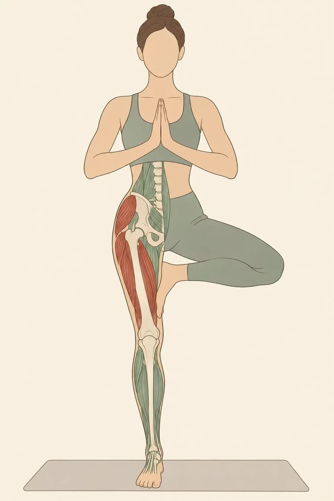
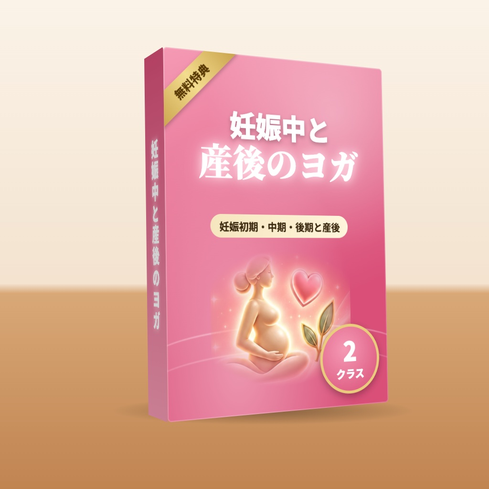
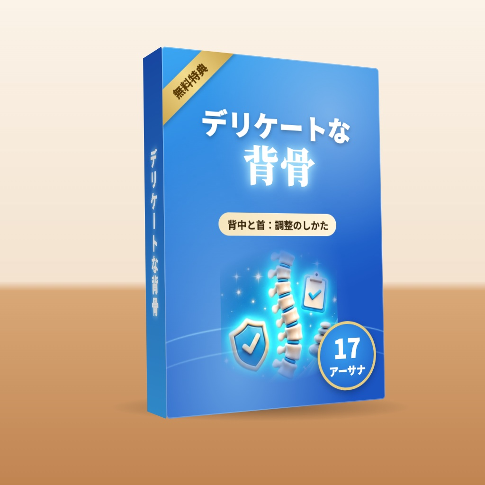
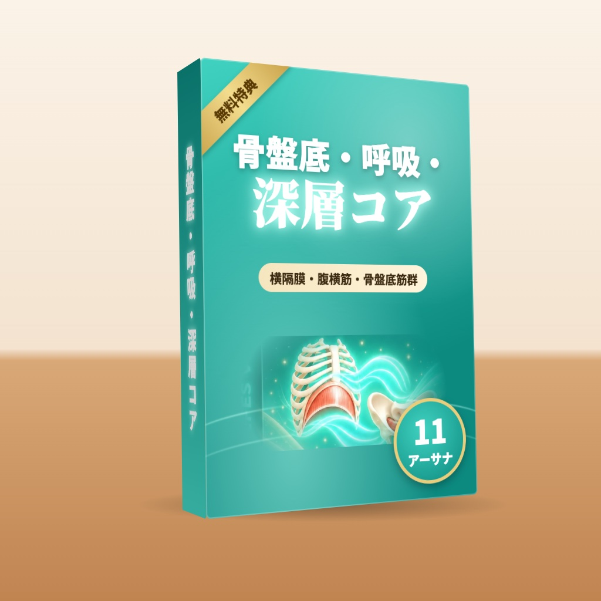
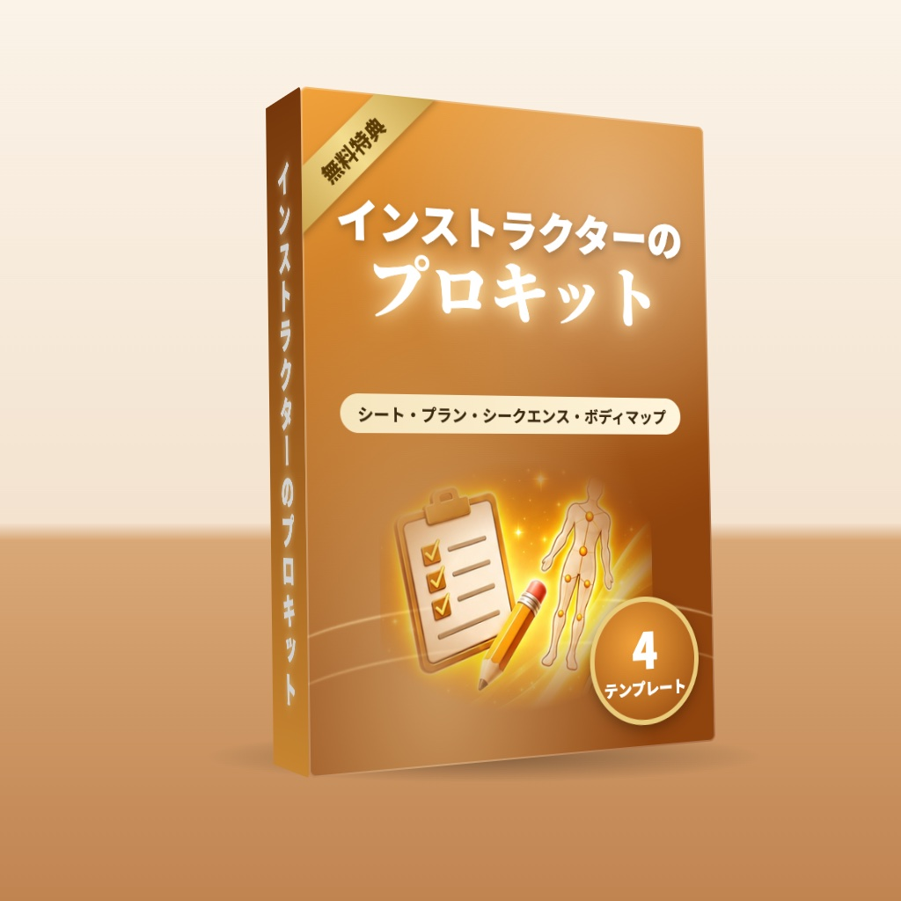

このページを保存してください。このリンクから、いつでも無期限にアクセスできます。スマートフォンのブラウザのメニューで「ホーム画面に追加」を選ぶと、アプリのように開けます。

メインブック
ヨガ解剖学 アーサナ図鑑
全182ページ：8章・120のアーサナ。どのポーズも筋肉を色分けした図（赤＝働く、緑＝安定させる）、段階ごとの背骨と骨盤、もっとも多いミスと声かけ、伝えることば、手を置く場所つき。さらに28筋の筋肉アトラスと、すぐ使える60分クラス6本。
本を開く（PDF）付属のアプリ
アーサナを名前・グループ・筋肉で検索できます。結果をタップすると、カード全体が開きます。
すぐ使えるクラス
60分クラス6本のプランを、いつでも手元に。タップすると本の該当ページが開きます。
- 1 · 基礎：初心者のためのアライメント初級 · 60分 · 170ページ
- 2 · 立位のダイナミックフロー中級 · 60分 · 172ページ
- 3 · 股関節とハムストリングス初級 · 60分 · 174ページ
- 4 · 段階的に学ぶ後屈中級 · 60分 · 176ページ
- 5 · ねじりと背骨初級 · 60分 · 178ページ
- 6 · スローでリストラティブな練習全レベル · 60分 · 180ページ
4つの特典




次のステップ
- 今週教える3つのアーサナをアプリで検索し、クラスの前にカードを読みましょう。
- 「クラスでこう伝えましょう」のフレーズをひとつ、次のクラスで声に出して使いましょう。
- インストラクターのプロキットの生徒さんシートを印刷し、新しい生徒さんと使いましょう。
- 妊娠中の生徒さんや背中がデリケートな生徒さんがいる場合は、まず該当する特典を読みましょう。